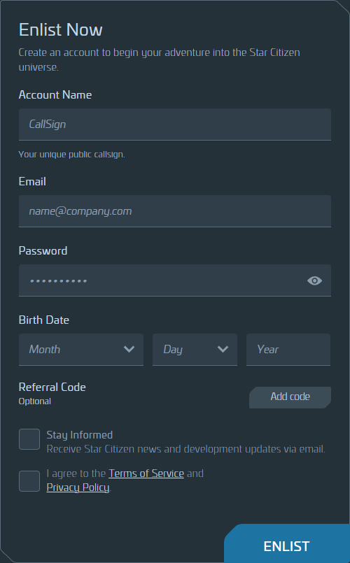
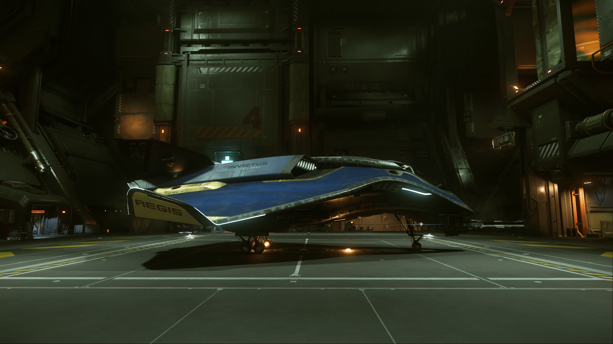
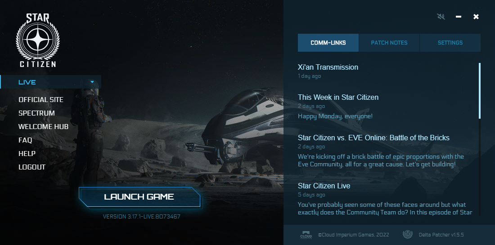
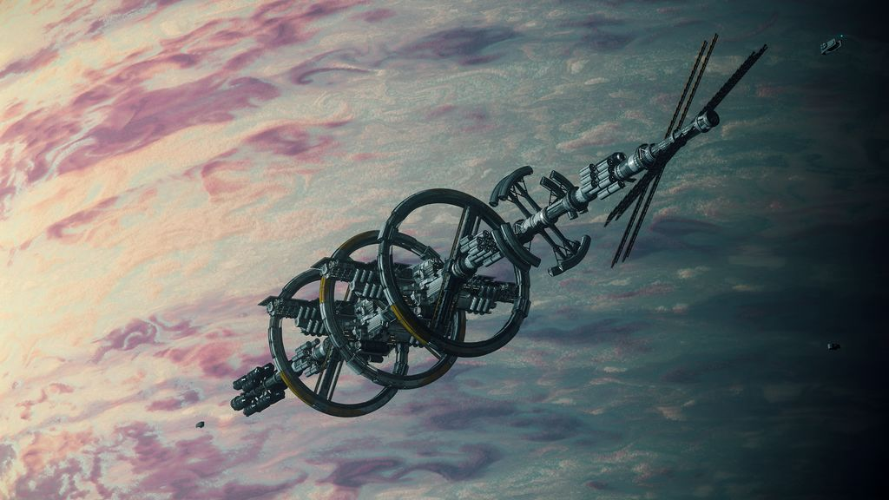
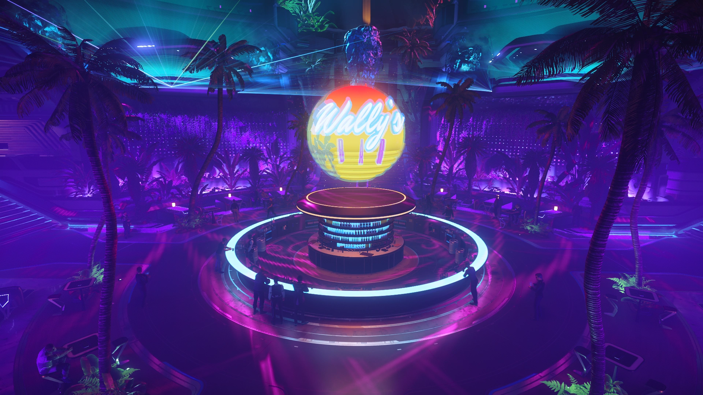

What is Star Citizen?
 In Star Citizen, you play the role of someone living in a sci-fi universe in which space travel is commonplace. In this world, you have the ability to explore different cities, planets, moons, space stations, asteroid belts, and even other systems. Everything in this world is highly interactable just like they would be in real life. The game is a life simulator set in the far future and you can do whatever you desire within it. This is the experience Star Citizen plans to deliver.
In Star Citizen, you play the role of someone living in a sci-fi universe in which space travel is commonplace. In this world, you have the ability to explore different cities, planets, moons, space stations, asteroid belts, and even other systems. Everything in this world is highly interactable just like they would be in real life. The game is a life simulator set in the far future and you can do whatever you desire within it. This is the experience Star Citizen plans to deliver.
Cloud Imperium Games (or CIG for short), the studio behind Star Citizen, started out as a very small studio. Now, they are one of the biggest game development companies out there
With every major update, CIG is introducing new tech important to the gaming industry as a whole.
First Steps
Prerequisites
It is a very demanding game with several bugs.
Thankfully, more and more optimizations are coming that make the game perform better than ever.
Before downloading the game, please make sure you have a computer that can play the game and are ready to experience lots of bugs.
| Minimum Specifications | |
|---|---|
| CPU | Intel Core i5 4xxx or AMD FX 6xxx |
| GPU | NVIDIA GTX 950 or AMD R7 260X |
| RAM | 8GB 1600MHz (with configured pagefile) |
| STO | 5400 RPM HDD |
| Known Playable Specifications | |
|---|---|
| CPU | Intel Core i5 4xxx or AMD FX 6xxx |
| GPU | NVIDIA GTX 970 or AMD R9 390X |
| RAM | 16GB 1600MHz (with configured pagefile) |
| STO | SSD |
Account Creation
 Creating an account is simple.You can begin signing up here.
Account Name
This is your in-game handle.
This will be how others will identify both inside and outside of Star Citizen.
This email address will be used to login to your account.
Password
It is recommended to have a strong password.
Referral Code
This is optional. If a friend has given you a code, put it here.
For example, here's my code: STAR-T4BW-6D5D
You get an additional 5,000 UEC starting cash,
great for buying weapons, ship upgrades, and personal armor!
Birth Date
May be used for future events.
Stay Informed
Checking this box will sign you up for RSI and CIG newsletters.
Game Packages
 To play Star Citizen, you will need a Game Package.A Game Package includes both a ship and a digital copy of the game.
The Pledge Store has many options to choose from. For this guide, we'll be focusing on the two main game packages starting at $45 each.
Aurora MR Starter Pack
Why pick the Aurora MR over the Mustang Alpha?- • Includes small interior
- • Includes bed
- • More stowage storage
- • Equipped with missiles
Mustang Alpha Starter Pack
Why pick the Mustang Alpha over the Mustang Alpha?- • Better fit for ship combat
- • Better flight performance in space and atmosphere
- • More cargo storage
- • Slightly higher value
While the Aurora MR and Mustang Alpha are both perfectly good ships for starting out, you can also buy other game packages.
Other starter ships are arguably better, but more expensive.
Installing the RSI Launcher
Once you have obtained a game package,it's time to install the game.
To do that, you'll need the RSI Launcher.

Please follow the steps below:
1. Head to the RSI Website.
2. Click on Apps on the top left of the page.
3. Within the dropdown menu, click on LAUNCHER
4. If everything is all good to go, click DOWNLOAD INSTALLER.
5. After installing the launcher, log in.
6. Click INSTALL to begin the installation.
7. When the game is finished installing, click LAUNCH GAME to begin playing!
Entering Star Citizen
Game Settings
Upon launching Star Citizen, you will have multiple game modes to choose from.For the entirety of this guide, we will focus on the Persistent Universe.
Before entering the persistent universe, let's go to the options menu and change our settings.
At the bottom left of the main menu, click on OPTIONS.
Note: If asked about it, FOIP is a system "by which your webcam captures your facial expressions and mimics them on your character in-game, in real time."
Recommended Settings
To get the best performance out of the game, we'll want to change some settings in the options menu.To begin, head to the Graphics tab at the top in the options menu.
Note: You can turn VSync on if you are using a widescreen display or TV.
Star Citizen is very CPU-heavy.
To lighten the load on your CPU, you'll want to set your game's quality to High or Very High. Doing so will put move some of the load from your CPU to your GPU. Setting your quality to medium or low is actually worse than high and very high.
If you have under 32GB of RAM, please set up a pagefile!
For more tips on how to improve performance in-game, please check out the FAQ.
Persistent Universe
In this guide, we'll be learning how to traverse through Star Citizen's Persistent Universe.The Persistent Universe (PU) is a massively multiplayer simulation and Star Citizen's main place of action.
When you're ready to play, select PERSISTENT UNIVERSE.
Character Creation
Creating a character is fairly simple.1. Begin by selecting your character's gender.
2. Choose your WHOLE HEAD with the up and down arrows on the left.
3. Begin blending and start cycling through the different base heads, blending their features to your character.
4. When finished, review and save your character.
Origin of an Adventure
Waking Up
Good morning and welcome to the world of Star Citizen!If you've been following along this guide, you'll find yourself awake in a hab in the city you chose before entering the Persistent Universe. Habs are small apartments for people on the go.
Press Y to get out of bed.
Use W, A, S, and D to move around.
Use your mouse to look around.
To interact with any interactive item in the game, hold F
then click your primary mouse button when you're ready to interact.
You can interact with many objects including bottles, chairs, and food.
Take one last look around your apartment, interact with the door panel next to the door and head out your room.
Going Outside
It's time to go outside.After exiting your apartment room, head to the center of the floor and take the elevator down to the ground floor lobby.
You can use SHIFT to sprint and get to the elevator faster.
If you want to experience the 'verse in third-person, press F4 to enter an over-the-shoulder third-person view.
Hold Z to enter "freelook" mode.
To unlock your camera, press F4 + *.
Press F4 again for a behind-the-back third-person view.
Press F4 AGAIN to go back into first-person view.
To turn off the chat, press F12.
If you need help, you can leave chat on and ask for help!
In Star Citizen, learning as you go is a great way to learn the game, so the guide will end here. Good luck and have fun in the persistent universe!

Glossary
| Term | Definition |
| 30K | A Code 30000 error that usually appears when the server crashes. |
| aUEC | Alpha United Earth Credits. This is a temporary currency designated for alpha testing. |
| Buyback Token | Players who melt their pledges receive a token allowing for the melted item to be purchased again. Buyback Tokens are issued once every three months. |
| CCU | Cross Chassis Upgrade. Players can upgrade a pledged ship hull to another for a cost. |
| CIG | Cloud Imperium Games. This is the company developing Star Citizen. |
| CS | CrimeStat. This is a rating used to determine the crime level of a criminal. |
| Concept | A ship or vehicle which goes on sale before it's flight ready. |
| Concierge | A backer who has directly pledged at least $1000 USD. |
| EM | Electromagnetic. This is a type of signature for ships. |
| ESP | Enhanced Stick Precision. This is related to joystick targeting controls. |
| EVA | Extra Vehicular Activity. You use EVA thrusters when space walking. |
| Evocati | This is a testing branch for Star Citizen's best community testers. They are under NDA. |
| Flight Ready | Any ship that is ready to be flown is flight ready. |
| FOIP | Face over IP. This is essentially VOIP but for your webcam. The webcam is used to translate your face's expressions, head turns, eye movements, and lip motions to your character. |
| IAE | Intergalactic Aerospace Expo. An annual in-game event showcasing several ships and vehicles from different manufacturers. Ships and Starter Packs also go on sale during this time. |
| JT | Jump Town. This is a famous drug lab located on the Yela moon. |
| JP | Jump Point. These are wormholes connecting neighboring star systems with each other. |
| Lagrange Point | These are areas of space between planetary orbits devoid of gravity. As a result, lagrange points are ideal locations for points of interest. |
| Loaner | When a player owns a ship in concept, they will receive a ship (and possibly more) to make up for the ship not being in the game yet. |
| LTI | Lifetime Insurance. A ship insurance that usually comes with ships in concept. |
| Melting | Players can exchange their digital purchases for store credit. |
| MFD | Multi Function Display. These are the information screens located on a ship's cockpit. |
| o7 | Salute emoticon. |
| OM | Orbital Marker. These are navigation points located around a planet's orbit. |
| PO | Port Olisar. This is an orbital space station located in Crusader's orbit. |
| PTU | Public Test Universe. This is a test version of the Persistent Universe. |
| PU | Persistent Universe. This is what makes Star Citizen Star Citizen. |
| QD | Quantum Drive. This is a ship component allowing ships to move at fractions of the speed of light. |
| QT | Quantum Travel. This is the method of travel used when using a Quantum Drive. |
| REC | Rental Equipment Credits. This is the currency used in the Arena Commander game mode modules. |
| SCU | Standard Cargo Unit. This is the universal measure for cargo volume. |
| SPK | Security Post Kareah. This is a new and popular security outpost located near Crusader. |
| UEC | United Earth Credits. This is the main currency that will be used when Star Citizen is released. |
| UEE | United Empire of Earth. This is the name of the current Human governmental body. |
| VTOL | Vertical Takeoff and Landing. Some ships have dedicated thrusters allowing for smoother take offs and landings in atmosphere. |
| Warbond | These are special promotions for ships that may include a discount or additional items. Warbond items cannot be bought with store credit. |
